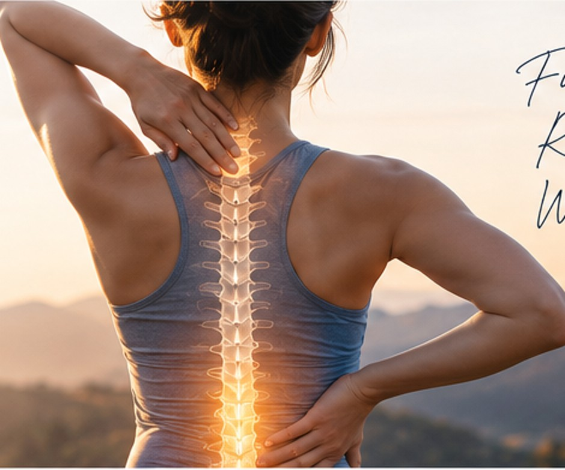

Physical Medicine & Rehabilitation
An individualized approach to function, mobility and recovery after injury.
Learn more →Comprehensive, non-surgical evaluation and individualized care for pain, workplace injuries, car accident injuries, sports injuries and musculoskeletal conditions—focused on helping you move and function better.
San Ramon main practice · Additional offices across the Bay Area

Explore common reasons patients seek assessment and guidance. Your care begins with an individualized medical evaluation.
Explore common reasons patients contact our medical practice. Specific services and suitability are determined during evaluation.
An individualized approach to function, mobility and recovery after injury.
Learn more →Evaluation of pain and its effects on daily function, with care planning tailored to the patient.
Learn more →Clinical assessment and recovery-oriented care for injuries arising in the workplace.
Learn more →Care for active individuals recovering from activity- and sports-related injury.
Learn more →Evaluation of pain and functional limitations following a car accident.
Learn more →Discuss the potential role of nerve and muscle testing with the clinical team.
Learn more →A physician in physical medicine and rehabilitation with credentials in pain and electrodiagnostic medicine, committed to a thoughtful approach to injury-related concerns.
We recognize that injury can affect work, recreation, movement and everyday life. Our goal is to help patients understand their symptoms and discuss appropriate next steps.
Call ahead to confirm appointment availability and services at each office.
200 Porter Drive, Suite 210
San Ramon, CA 94583
555 Front Street
San Francisco, CA 94111
24301 Southland Drive, Suite 613
Hayward, CA 94542
1320 Willow Pass Road, 6th Floor
Concord, CA 94520
2060 Walsh Avenue, Suite 137
Santa Clara, CA 95050
Find information about common injury-care questions, what to bring, and how to ask about scheduling.
View frequently asked questionsCall our office to discuss whether an assessment is appropriate. For emergencies, call 911 or seek emergency medical care.
510-781-0211 →Questions about an injury, evaluation or next steps? Contact ReMD to ask about appointments and services at your preferred office.
Call 510-781-0211 ↗